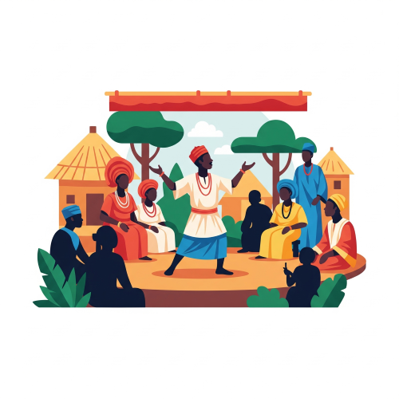
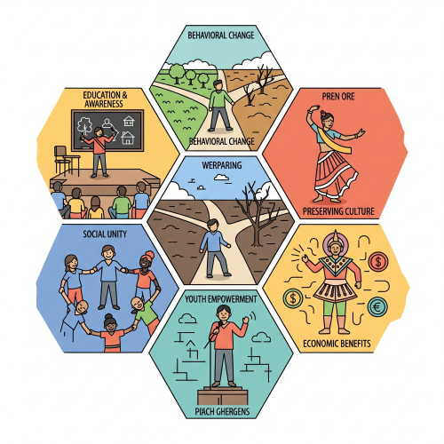

Drama and Development of Rural Community
Meaning of Drama
Drama is a form of art that tells stories through acting, speech, movement, and expressions. It is a creative way of passing messages using role play. Drama usually takes place on stage or open spaces, and it involves actors, audience, dialogue, costumes, and actions.

In simple terms, drama is acting out stories to educate, entertain, and inform people.
Types of Drama Common in Rural Communities
- Traditional Drama: These are local plays performed during festivals or ceremonies, without written scripts. They include masquerade performances, folk tales, and ancestral stories.
- Religious Drama: These are drama pieces performed in churches or mosques to teach moral and spiritual lessons.
- Developmental Drama (or Community Theatre): This type of drama is used to address issues affecting the people such as health, education, farming, hygiene, drug abuse, early marriage, and political participation.
- Educational Drama: These are school-based drama activities that help students learn values, culture, and history.
Elements of Drama
- Characters: People in the drama who act out roles.
- Dialogue: The words spoken by the characters.
- Plot: The sequence of events or storyline.
- Setting: Where and when the drama takes place.
- Conflict: The main problem in the story.
- Resolution: How the problem is solved.
Importance and Role of Drama in Rural Development
Drama is more than entertainment — it is a powerful tool to bring growth and development to villages and rural areas.

- Education and Awareness : Drama is used to teach villagers about important topics like:
- HIV/AIDS prevention.
- Family planning.
- Clean water and sanitation.
- Modern farming techniques.
- Voting rights and responsibilities.
- Behavioural Change : Drama influences people’s attitude. For example, a play about dangers of drug abuse can make young people stop taking hard drugs.
- Preserving Culture : Drama helps to keep traditional stories, music, dance, proverbs, and language alive.
- Social Unity : Village plays bring people together during festivals and public gatherings. This promotes peace and friendship among community members.
- Youth Empowerment : Young people can gain confidence, leadership, and communication skills through acting and drama groups.
- Economic Benefits : Drama can become a source of income when performances are taken to nearby towns or recorded for radio and TV.
Techniques of Drama for Community Development
- Role Play: People act out real-life situations to understand and solve community problems.
- Improvisation: Drama is performed without a written script, making it flexible and relevant to any village issue.
- Forum Theatre: The audience can join the performance to suggest solutions to problems.
- Storytelling: Traditional stories are acted out to teach morals and values.
How to Use Drama to Improve a Rural Community
- Form a village drama group with youths and elders.
- Pick common issues in the community (e.g. child labour, open defecation, malaria).
- Create simple plays in local language.
- Perform during market days, festivals, PTA meetings, or town hall gatherings.
- Encourage the community to discuss the lessons after the drama.
- Work with health officers, teachers, or agricultural experts to make the message stronger.
Qualities of a Good Community Drama
- Easy to understand.
- Performed in local language.
- Contains message that solves real problems.
- Includes music and dance to attract audience.
- Should be short and interesting.
- Must have a lesson or moral.
Setting Up a Community Drama Project (Practical Guide)
Step 1: Identify a problem
E.g. Many children are dropping out of school.
Step 2: Form a drama group
Gather interested youths, students, or members of a club.
Step 3: Choose a theme and title
- Theme: Importance of Education
- Title: "School Is Better Than Street"
Step 4: Create a simple script
Write or discuss the beginning, middle, and end of the play.
Step 5: Rehearse and assign roles
Actors, narrator, costume manager, drum beater, etc.
Step 6: Perform the play
At the village square or school hall.
Step 7: Discuss the outcome
Ask the audience what they learnt and how they will change.
Values and Lessons Learnt from Drama in the Community
- Obedience to elders.
- Hard work and honesty.
- Cleanliness and hygiene.
- Respect for culture.
- Importance of education.
- Gender equality and fairness.
- Peaceful conflict resolution.
- Avoidance of corruption and crime.
Career Prospects in Drama
Drama is not just for fun — it can also lead to many rewarding careers. Young people who are talented in acting, storytelling, scriptwriting, or directing can build successful futures in the entertainment, education, and cultural sectors.
Careers in Drama Include:
- Actor/Actress: Performs roles in plays, movies, TV shows, or stage performances.
- Playwright (Scriptwriter): Writes the script or dialogue for drama productions.
- Director: Controls how the drama is acted out, including the arrangement of scenes and actors.
- Drama Teacher: Teaches drama in schools, art centres, or private coaching institutions.
- Stage Manager: In charge of stage arrangements, lighting, props, and costumes during a performance.
- Theatre Producer: Organises and funds drama performances or theatre shows.
- Costume Designer: Designs and makes clothes used by actors in a drama.
- Makeup Artist: Designs the facial appearance of actors to match their roles.
- Set Designer: Builds the background scene or environment where drama is acted.
- Radio/TV Drama Presenter: Acts in or coordinates radio or TV drama programs.
- Voice-Over Artist: Uses voice to act in audio drama or animated films.
- Community Development Worker: Uses drama to educate people in rural areas.
ASSIGNMENT AND REVISION
- Define music.
- List 5 uses of music.
- Mention 3 positive impacts of music.
- What are the 7 solfa syllables?
- Set the words “Unity is strength” to solfa notation.
- what are the career Prospects in drama?